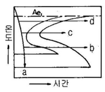
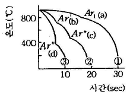
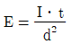
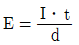
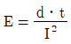
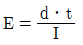
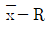

금속재료기능장 (2012-07-22 기출문제)
1과목: 임의 구분
1. 금속초미립자에 대한 설명 중 틀린 것은?
- 용융점이 금속덩어리보다 낮다.
- 활성이 강하여 여러 가지 화학반응을 일으킨다.
- Fe계 합금 초미립자는 금속덩어리보다 자성이 강하다.
- 저온에서 열저항이 매우 커 열의 부도체이다.
(정답률: 74%)

2. Cr 강이나 Cr-Mo 강과 같이 고체 침탄법에 의한 침탄 처리를 하여도 탄소의 확산이 느려 표면에 집중 되어 있는 경우, 침탄층의 탄소를 내부로 확산시킬 목적으로 행하는 열처리 방법은?
- 구상화풀림(spherodizing annealing)
- 확산풀림(diffusion annealing)
- 템퍼링(tempering)
- 퀜칭(quenching)
(정답률: 86%)
3. 고체금속에서 극히 저온인 경우 100% 규칙성을 나타낸다고 한다. 이때의 규칙도(degree of order)는?
- 0
- 0.5
- 1
- ∞
(정답률: 85%)
4. 매크로 조직의 종류 중 강괴의 응고 과정에서 성분의 편차에 따라 중심부에 농도차가 나타난 것의 기호 표시로 옳은 것은?
- T
- Tc
- Sc
- Lc
(정답률: 63%)
5. 가열온도 870℃에서 부품을 담금질하였을 경우의 냉각 과정에서 대류 단계의 냉각속도가 가장 빠른 것은? (단, 교반은 없는 것으로 가정한다.)
- 28℃의 공기
- 204℃의 영욕
- 24℃의 물
- 52℃의 담금질유
(정답률: 95%)
6. 다음 TTT 등온 변태도에서 미세펄라이트 변태구간은?

- a
- b
- c
- d
(정답률: 85%)
7. 경도시험을 이용한 측정과 관계가 가장 먼 것은?
- 탈탄층의 측정
- 재료 인성의 측정
- 질량 효과의 측정
- 표면 경화층의 측정
(정답률: 64%)
8. 2개 이상의 물체가 접촉하여 상대 운동을 할 때 그 면이 감소되는 현상을 측정하여 내마멸성을 알아보기 위한 시험법은?
- 인장 시험
- 마모 시험
- 커핑 시험
- 크리프 시험
(정답률: 91%)
9. 재료의 기계적 성질 및 가공과 재결정과의 관계를 설명한 것 중 옳은 것은?
- 재결정은 전위에 직접적인 영향을 미친다.
- 가공도가 클수록 축적된 변형에너지는 작아진다.
- 가공도가 클수록 재결정은 고온에서 일어난다.
- 일반적으로 재료의 강도, 내부응력 등은 재결정단계에서는 감소되지 않는다.
(정답률: 70%)
10. 조밀육방격자 금속의 단위격자소속원자수와 배위수는 각각 얼마인가?
- 단위격자소속원자수 : 2, 배위수 : 8
- 단위격자소속원자수 : 2, 배위수 : 12
- 단위격자소속원자수 : 4, 배위수 : 8
- 단위격자소속원자수 : 4, 배위수 : 12
(정답률: 72%)
11. 철강재료의 현미경 조직시험에 주로 사용되는 부식제는?
- 왕수
- 염화제이철 용액
- 수산화나트륨 용액
- 질산알콜 용액
(정답률: 85%)
12. 오스테나이트계 스테인리스강의 공식(pitting)을 방지하기 위한 대책으로 옳은 것은?
- 할로겐 이온의 농도를 높게 한다.
- 질산염, 크롬산염 등의 부동태화제는 피한다.
- 재료 중에 Ni, Cr, Mo 성분을 많게 한다.
- 액을 유동시켜 균일한 알칼리성 용액으로 하고 산소농담전지를 형성시킨다.
(정답률: 86%)
13. 뜨임 균열의 대책을 설명한 것 중 틀린 것은?
- 가능한 한 가열을 빨리 한다.
- 잔류응력을 제거한다.
- Ms, Mf 점이 낮은 고합금강 등은 2번 뜨임한다.
- 결정입계에 취성 나타내는 화학성분을 감소시킨다.
(정답률: 92%)
14. 전자강판에 요구되는 특성을 설명한 것 중 틀린 것은?
- 철손이 적어야 한다.
- 자화에 의한 치수 변화가 적어야 한다.
- 사용 중에 자기적 성질의 변화가 적어야 한다.
- 박판을 적층하여 사용할 때 층간저항이 낮아야 한다.
(정답률: 88%)
15. 전기 저항식 온도계에 관한 설명 중 틀린 것은?
- 700℃ 이하의 온도 측정용에 적합하다.
- 측은 저항체로서 납선, 주석선, 아연선 등이 적합하다.
- 금속의 전기 저항은 1℃ 상승하면 약 0.3~0.6%증가한다.
- 온도 상승에 따라 금속의 전기 저항이 증가하는 현상을 이용한 것이다.
(정답률: 72%)
16. 담금질한 공석강의 냉각 곡선에서 사편을 100℃의 물 속에 넣었을 때 ③과 같은 곡선을 나타낼 때의 조직은?

- 펠이트(ferrite)
- 펄라이트(pearlite)
- 마텐자이트(martensite)
- 시멘타이트(cementite)
(정답률: 84%)
17. 담금질 작업시 냉각단계의 순서로 옳은 것은?
- 증기막단계 → 대류단계 → 비등단계
- 증기막단계 → 비등단계 → 대류단계
- 비등단계 → 증기막단계 → 대류단계
- 대류단계 → 증기막단계 → 비등단계
(정답률: 84%)
18. 와전류탐상검사에서 동일한 시험체의 두 부분을 서로 비교하는 코일의 배열 방법은?
- 자기 비교형
- 단일 비교형
- 상호 비교형
- 절대 비교형
(정답률: 67%)
19. 백주철을 열처리로에 넣어 가열하여 탈탄 또는 흑연화 방법으로 제조한 주철은?
- 회주철
- 합금주철
- 칠드주철
- 가단주철
(정답률: 70%)
20. 영구자석을 사용한 극간형(yoke type) 자분탐상시험법의 주된 장점으로 옳은 것은?
- 자력이 수시로 바뀐다.
- 탈자가 요구되지 않는다.
- 어떤 시험체에도 적용이 용이하다.
- 전력(electric power)이 요구되지 않는다.
(정답률: 68%)
2과목: 임의 구분
21. 현미경으로 금속조직을 검사할 때의 작업 순서로 옳은 것은?
- 시편 채취 → 마운팅 → 폴리싱 → 부식 → 관찰
- 시편 채취 → 폴리싱 → 마운팅 → 부식 → 관찰
- 시편 채취 → 부식 → 마운팅 → 폴리싱 → 관찰
- 시편 채취 → 마운팅 → 부식 → 폴리싱 → 관찰
(정답률: 85%)
22. 티타늄(Ti) 금속의 특성을 설명한 것으로 틀린 것은?
- 내력/인장강도의 비가 1에 가깝다.
- 조밀육방정 금속으로 소성변형에 제약이 많다.
- 연신재에서는 집합조직(섬유조직)에 따른 이방성을 나타내지 않는다.
- 상온에서 300℃ 근방의 온도구역에서 강도의 저하가 명백히 나타난다.
(정답률: 59%)
23. 잔류오스테나이트에 대한 설명 중 옳은 것은?
- 탄소강에서 탄소함유량과 잔류오스테나이트 함유량은 비례관계에 있다.
- 잔류오스테나이트는 근본적으로 오스테나이트와 결정구조가 다르다.
- 퀜칭시 냉각속도를 지연시킬수록 잔류오스테나이트의 생성량은 감소한다.
- 니켈, 망간 등의 원소를 첨가하면 잔류오스테나이트의 생성량은 감소한다.
(정답률: 63%)
24. 확산의 속도가 빠른 순서로 나열된 것은?
- 표면확산 > 입계확산 > 격자확산
- 표면확산 > 격자확산 > 입계확산
- 격자확산 > 표면확산 > 입계확산
- 입계확산 > 격자확산 > 표면확산
(정답률: 86%)
25. 초음파탐상시 장비보정 할 때 기준감도를 전스크린 높이의 40%에 맞추었는데 다른 검사원이 탐상장비를 조작하여 기준강도를 60%에 맞추어지도록 조정하였다면 이는 원래의 기준감도에서 약 몇 dB 증폭시킨 것인가?
- 1.5
- 3.5
- 5.5
- 7.5
(정답률: 53%)
26. Al-Si 합금에서 초정 Si를 미세화시키는 처리는?
- 용체화처리
- 개량처리
- 시효경화처리
- 분산강화처리
(정답률: 82%)
27. 후유화성 형광 침투탕상검사로 제품을 검사할 때 의 특징이 아닌 것은?
- 비교적 폭이 넓고 얕은 결함의 검출에 알맞다.
- 정확하게 유화처리하면 과세척 될 염려가 적다.
- 다른 일반적인 침투탐상방법에 비하여 침투시간이 짧다.
- 탐상조작이 일반적인 침투탐상방법에 비하여 쉽고 간편하다.
(정답률: 54%)
28. 내열강에서 내식성 향상과 내식성 향상을 위한 보조 용도로 사용하는 합금 성분이 아닌 것은?
- Si
- Mo
- Al
- Cr
(정답률: 49%)
29. 강의 담금질시 위험구역의 범위는?
- Ms ~ Mf구간
- Ar′ ~ Mf구간
- Ar′ ~ Ar′′ 구간
- 오스테나이트화 온도 ~ Ar′ 구간
(정답률: 77%)
30. 금속 재료 인장 시험 방법(KS B 0802)에서 인장시험을 수행할 때 내력을 구하는 방법이 아닌 것은?
- 오프셋법
- 영구 연신율법
- 전체 연신율법
- 스트레인 게이지법
(정답률: 69%)
31. 열처리 결함 중에는 담금질시 발생하는 균열과 변형이 가장 많다. 이 때 담금질 균열 및 변형 방지 방법으로 틀린 것은?
- 축물에는 면취를 한다.
- Ms~ Mf범위에서는 가능한 한 서냉한다.
- 구멍을 뚫어 부품의 각부가 균일하게 냉각되도록한다.
- 냉각시 온도를 불균일하게 하고 될수록 변태가 동시에 일어나지 않게 한다.
(정답률: 82%)
32. 구리판, 알루미늄판 및 기타 연성의 판재를 가압 성형하여 재료의 변형능력 즉, 연성을 알기 위한 시험 방법은?
- 항절시험
- 굽힘시험
- 크리프시험
- 에릭센시험
(정답률: 87%)
33. 고스트 라인(Ghost line)에 대한 설명으로 틀린 것은?
- 강의 파괴 원인이 된다.
- P의 불순물에 의한 결함이다.
- 수축에 의한 결함이다.
- Fe3P는 MnS, MnO2 등과 집합하여 형성한다.
(정답률: 57%)
34. 다음 합금 중 초경합금이 아닌 것은?
- 위디아(Widia)
- 탕갈로이(Tangaloy)
- 카볼로이(Carboloy)
- 플래티나이트(Platinite)
(정답률: 94%)
35. 고주파 담금질 경화법의 특징을 설명한 것 중 틀린 것은?
- 직접 가열하므로 열효율이 높다.
- 열처리 불량이 적고 변형 보정을 필요하지 않다.
- 표면층에 거시적인 높은 인장잔류응력이 존재한다.
- 각종 축류, 치차, 핀류 등의 열처리에 널리 사용되고 있다.
(정답률: 60%)
36. 두랄루민의 시효에 대한 설명으로 틀린 것은?
- 일반적으로 상온 시효한 것이 인공 시효한 것보다 내식성이 크다.
- 상온 시효 기간이 길어도 기니어프리스턴(G.P.zone)존 형성 이외에 다른 변태는 일어나지 않는다.
- 인공 시효에 의해 기계적 강도가 향상되고 단상 조직이 되므로 내식성이 향상된다.
- 시효 온도를 높게 하면 시효 속도는 빨라지나 몇 시간이 되므로 내식성이 향상된다.
(정답률: 44%)
37. 열처리로를 열원, 용도, 구조에 따라 분류 할 때 구조에 따른 분류에 해당되지 않는 것은?
- 배치로
- 회전로
- 상형로
- 진공로
(정답률: 83%)
38. 뜨임취성을 방지하기 위한 대책으로 틀린 것은?
- 고온 뜨임 후 로냉한다.
- P, Sb, N 등을 가능한 감소시킨다.
- 오스테나이트 결정립을 미세화한다.
- 뜨임할 때에는 되도록 완전한 마텐자이트로 한다.
(정답률: 52%)
39. 합금원소가 주철에 미치는 영향을 설명한 것 중 틀린 것은?
- Cr 은 Fe3C 를 안정화하는 강력한 원소이다.
- Mo 은 탄화물을 생성하는 원소로서 흑연화를 저지한다.
- V 은 강력한 흑연화 방해원소이며 복잡한 탄화물을 만든다.
- Cu 는 오스테나이트에 고용되어 불안정화하고 흑연화를 저지한다.
(정답률: 52%)
40. S곡선에 영향을 주는 요소 중 오스테나이트에서 외부로부터 응력을 받게 되는 경우를 설명한 것 중 옳은 것은?
- 변태시간은 짧아져서 S곡선의 변태개시선은 좌측으로 이동하고 Ms 선의 온도는 위로 이동한다.
- 변태시간은 짧아져서 S곡선의 변태개시선은 우측으로 이동하고 Ms 선의 온도는 아래로 이동한다.
- 변태시간은 짧아져서 S곡선의 변태개시선은 좌측으로 이동하고 Ms 선의 온도는 아래로 이동한다.
- 변태시간은 짧아져서 S곡선의 변태개시선은 우측으로 이동하고 Ms 선의 온도는 위로 이동한다.
(정답률: 72%)
3과목: 임의 구분
41. 전자기적 성질을 이용한 비파괴시험 방법이 아닌 것은?
- 초음파탐상시험
- 전자유도시험
- 통전법에 의한 자분탐상시험
- 리모트 필드 (remote field) 와류탐상시험
(정답률: 68%)
42. 각종 피로에 대한 설명으로 옳은 것은?
- 지름이 크면 피로한도는 크다.
- 노치가 없는 시험편의 피로한도는 크다.
- 표면이 거친 것이 고운 것보다 피로한도가 커진다.
- 시험편이 산, 알칼리 등에 부식되면 피로한도가 커진다.
(정답률: 65%)
43. 금속의 응고과정에서 고상의 자유에너지 변화에 대한 설명으로 틀린 것은? (단, r0는 임계핵의 반지름, r 은 고상의 반지름, Ev은 체적 자유에너지, Es는 계면 자유에너지이다.)
- r0 이하 크기의 고상입자를 엠브리오(embryo)라 한다.
- r0 이상 크기의 고상을 결정의 핵(nucleus)이라 한다.
- r < r0 인 경우에는 반지름이 증가함에 따라 자유에너지는 감소한다.
- 고상의 전체 자유에너지의 변화는 E = Es - Ev 로 표시 된다.
(정답률: 79%)
44. 불꽃시험에서 탄소파열을 조장하는 원소는?
- Ni
- Mo
- Si
- Mn
(정답률: 64%)
45. 강재의 열간가공에 의한 성질변화로 틀린 것은?
- 강괴 중의 기포 등이 압착된다.
- 주조조직이 제거되고 결정립이 조대화된다.
- 가공 중 고온유지로 편석이 경감된다.
- 비금속개재물이 가공방향으로 늘어난 섬유상조직이 된다.
(정답률: 65%)
46. 방사선 투과시험에서 노출인자를 구하는 식으로 옳은 것은? (단, E : 노출인자, I : 관전류 또는 감마 선원의 강도, t : 노출시간, d : 선원 ⁃필름사이의 거리이다.)




(정답률: 73%)
47. 지름이 10mm, 시편길이가 160mm, 표점거리가 50mm인 인장 시편에 6000kgf을 걸었더니 표점길이가 51.2mm로 변화하였을 때의 응력과 변형률은 각각 약 얼마인가?
- 응력 : 38.2kgf/mm2, 변형률 : 0.4%
- 응력 : 38.2kgf/mm2, 변형률 : 0.2%
- 응력 : 76.4kgf/mm2, 변형률 : 2.4%
- 응력 : 76.4kgf/mm2, 변형률 : 1.2%
(정답률: 73%)
48. 강의 표면 경화법에서 화학적과 물리적 방법으로 나눌 때 물리적 방법에 해당되는 것은?
- 고체침탄법
- 전해경화법
- 질화처리법
- 침유처리법
(정답률: 79%)
49. 강 중에 포함되어 쾌삭성을 높이기 위한 첨가 원소가 아닌 것은?
- S
- Pb
- Se
- Cr
(정답률: 62%)
50. 축의 완성지름, 철사의 인장강도, 아스피린 순도와 같은 데이터를 관리하는 가장 대표적인 관리도는?
- c 관리도
- nP 관리도
- u 관리도

관리도
(정답률: 61%)
51. 로트의 크기가 시료의 크기에 비해 10배 이상 클 때, 시료의 크기와 합격판정개수를 일정하게 하고 로트의 크기를 증가시킬 경우 검사특성곡선의 모양 변화에 대한 설명으로 가장 적절한 것은?
- 무한대로 커진다.
- 별로 영향을 미치지 않는다.
- 샘플링 검사의 판별 능력이 매우 좋아진다.
- 검사특성곡선의 기울기 경사가 급해진다.
(정답률: 73%)
52. 소비자가 요구하는 품질로서 설계와 판매정책에 반영되는 품질을 의미하는 것은?
- 시장품질
- 설계품질
- 제조품질
- 규격품질
(정답률: 75%)
53. 다음 중 샘플링 검사보다 전수검사를 실시하는 것이 유리한 경우는?
- 검사항목이 많은 경우
- 파괴검사를 해야 하는 경우
- 품질특성치가 치명적인 결점을 포함하는 경우
- 다수 다량의 것으로 어느 정도 부적합품이 섞여도 괜찮을 경우
(정답률: 85%)
54. 작업시간 측정방법 중 직접측정법은?
- PTS법
- 경험견적법
- 표준자료법
- 스톱워치법
(정답률: 74%)
55. 준비작업기간 100분, 개당 정미작업시간 15분, 로트 크기 20일 때 1개당 소요작업시간은 얼마인가? (단, 여유시간은 없다고 가정한다.)
- 15분
- 20분
- 35분
- 45분
(정답률: 73%)
56. 안전교육의 방법 중 토의법을 적용하는 경우가 아닌 것은?
- 수업의 초기 단계에 적용한다.
- 팀워크가 필요로 하는 경우에 적용한다.
- 알고 있는 지식을 심화하기 위해 적용한다.
- 어떠한 자료에 대해 보다 명료한 생각을 갖게 하는 경우에 적용한다.
(정답률: 73%)
57. 다음 중 안전점검의 가장 주된 목적은?
- 위험을 사전에 발견하여 개선하는데 있다.
- 법 및 기준에 적합 여부를 점검하는데 있다.
- 안전사고의 통계율을 점검하는데 있다.
- 장비의 설계를 하기 위함이다.
(정답률: 89%)
58. 다음 중 유연생산시스템(FMS)의 대한 설명으로 틀린 것은?
- 새로운 공작물의 생산 준비 기간이 길어진다.
- 기계의 이용률이 높아지고 임금이 절약된다.
- 생산 기술자가 적극적으로 참여한다.
- 생산 기간의 단축과 납기가 단축된다.
(정답률: 82%)
59. 다음 중 공압장치에 대한 설명으로 틀린 것은?
- 인화의 위험이 없다.
- 에너지 축적이 용이하다.
- 압축공기의 에너지를 쉽게 얻을 수 있다.
- 정확한 위치결정 및 중간정지가 가능하다.
(정답률: 70%)
60. 유압의 제일 기본 원리인 파스칼(Pascal)의 원리에 대한 설명 중 틀린 것은?
- 액체의 압력은 수평으로 작용한다.
- 액체의 압력은 각면에 직각으로 작용한다.
- 각 점의 압력은 모든 방향에 동일하게 작용한다.
- 밀폐된 용기 내 액체에 가해진 압력은 동일한 크기로 각부에 전달된다.
(정답률: 80%)